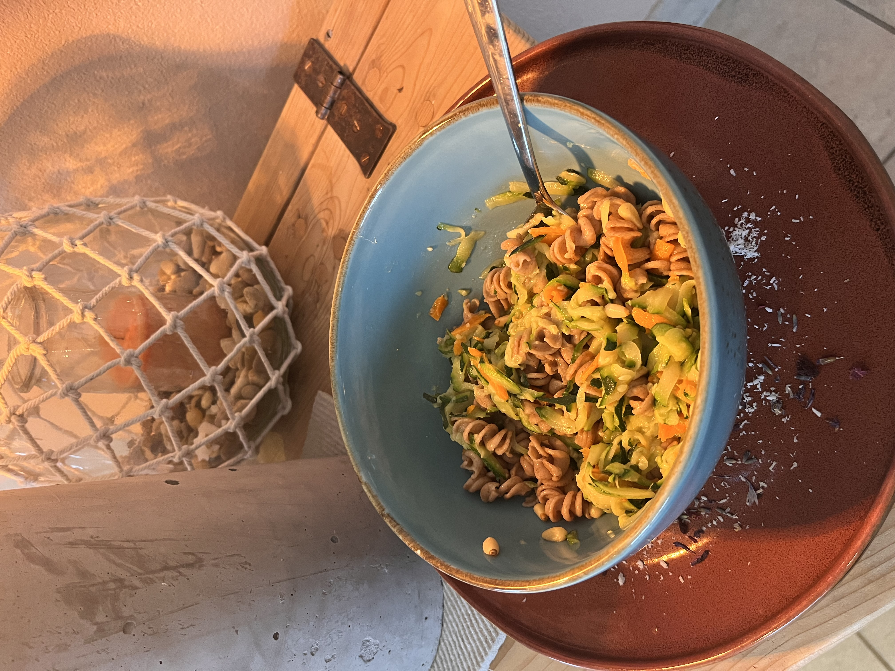

Cremig, mit gekeimten Dinkelnudeln.
Zum Rezept →
Schnell, sättigend, gut nach dem Sport.
Zum Rezept →
Nº 03Mit Karotten, Kürbis und gekeimten Dinkelnudeln.
Zum Rezept →
Nº 04Auf Zucchini-Aufstrich serviert.
Zum Rezept →
Nº 05Aus dem Aufstrich-Grundrezept — geht auch warm.
Zum Rezept →
Nº 06Rezept folgt in Kürze.
Bald →